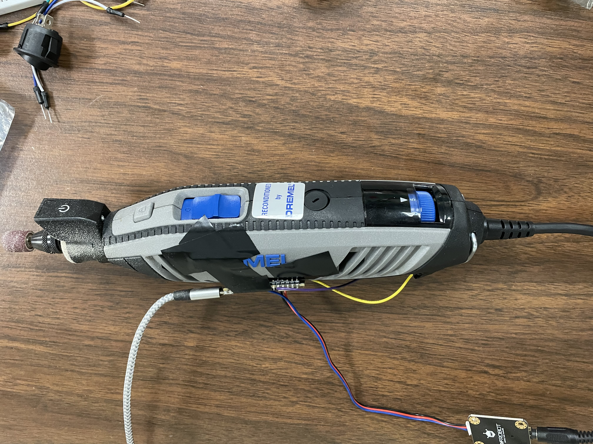

Real-time Anomaly Detection for AI Enhanced Tool Usage in Dremels
This project leverages anomaly detection through machine learning to improve the safety and efficiency of dremel usage. Our approach is centered around the idea that AI is a tool for empowerment, not replacement. The goal is to assist workers in identifying and addressing potential issues in real-time, ensuring that tools are used optimally and safely.
Code Functionality Overview
Data Preparation:
- The code starts by loading measurements of current from a dremel. Utilizing an Arduino nanochip and various code scripts, current data is extracted from the dremel in realtime and used to build the training data for the model and anomaly detection. 
- To process and normalize the data for consistency, the data is filtered and cleaned to make it suitable for our neural network model.
- The training data consists of over 60,000 data points of non-anomalous current values ranging from 0.36657 to 1.40274; The training data was collected over a span of 10 minutes with 5 second intervals of active use and stationary use.
- The anomaly/test data consists of over 10,000 data points of a mixture of non-anomalous and anomalous current values ranging from 0.32747 to 2.23363; The anomalous data was collected over a span of 2 minutes with 5 second intervals of active use and stationary use. The points of anomaly are when the dremel tool was used with excessive force which caused smoke

Model Design:
- The core of how anomaly detection is implemented is through a Sequential neural network model built using Python packages TensorFlow and Keras.
- Conv1D layers are utilized to capture patterns over time, followed by Conv1DTranspose layers to reconstruct the input data. The difference between the actual and reconstructed data helps us identify anomalies.
- The model is trained to recognize normal behavior in the tool's operation by learning from recorded data.

Training and Validation:
- The model is trained using sequences of data, allowing it to learn patterns that represent normal operation. We use a portion of the data for validation to prevent overfitting.
- After training, we evaluate the model by calculating the Mean Absolute Error (MAE) between the predicted and actual data, which helps us establish a threshold for anomaly detection.
Anomaly Detection:
- Once trained, the model is packaged and loaded onto the dremel and tested with new data that can be collected in real-time. We compute the mean absolute error for these test sequences and compare them to the previously established threshold.
- Any sequence that exceeds this threshold is flagged as an anomaly, indicating a potential issue with the dremel's operation.
- The code then highlights these anomalies in red on a plot, allowing for easy visualization and interpretation.
Future Work:
- As of now the anomaly detection model only detects anomalies with current. In the future it is possible to detect anomalies with multiple measurements like acceleration, gyro, hand-positioning, and etc
- Although most data and testing has been conducted on a dremel, many other tools like drills, power saws, welding tools, and many more could potentially utilize this model for enhanced use that promotes safety and efficiency
- Anomaly detection could be presented in an intuitive and accessible UI rather than a barebones Python script. Imagine the anomaly detection portrayed on a screen or in augmented reality. This anomaly detection model serves as a base for endless opportunity for real use by trade skill workers.
Impact on Workers
- Enhanced Safety: The system can detect deviations in tool usage that may indicate unsafe operation, providing real-time feedback to workers and preventing accidents before they occur.
- Skill Improvement: By analyzing patterns in tool usage, workers can receive insights into their technique, helping them refine their skills and use tools more effectively.
- Assistance, Not Replacement: This AI system is designed to support workers by providing them with actionable insights. It is not a replacement for human workers but a tool to enhance their capabilities.
This anomaly detection model exemplifies how AI can be a valuable asset in fostering a safer and more efficient working environment while respecting and enhancing the skills of trade skill workers.